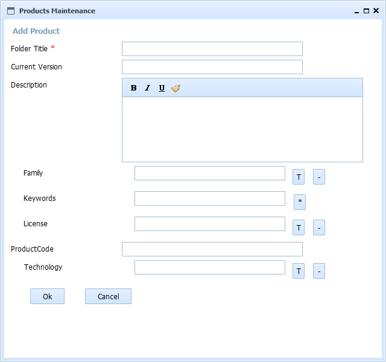

Help SMO Product Add
This form allows to add a Product to a department or Software Company. All the fields follow the interface conventions of OpenProdoc:
- Standard fields: Without special mark
- Required fields: With a character "*"
- Thesaurus controlled: With a button with character "T" for selecting and "-" for deleting
- Multivalued: With a button with character "*"
- Multivalued and Thesaurus controlled: With a button with characters "T*"
With the default configuration, the fields to fill are:
- Tille-Name: Name of the product
- Current Version: Current version published, installed or used
- Description: Long description of the product
- Family: Family or kind of product (Database, O.S., Communications Library, Machine Learning Library, ...)
- keywords: Keywords that describe product functionality
- License: Type of License (Comercial, Open Source, GPL, Affero, BSD,..)
- Code: Internal or external code of the product.
- Technology: Technology of the product (Java, Javascript, .Net,binary,...)

This operation will create a new folder of the type configured (the default configured type is Products) that could contain all the subfolders and documents specific for this product
In SMO Tree there is a complete view of operations and forms.